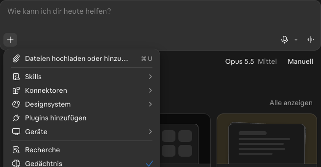

Die erste Anfrage und die erste geprüfte Zahl
Danach hast du eine erste echte Aufgabe mit KI erledigt, weißt, was ein Modell ist, und hast eine Zahl aus der Antwort im Original nachgesehen.
Etappe 1 · Loslegen, aber richtig- 1Aufgabe wählen: Soll die KI das machen?
- 2Das richtige Konto und was du hineingeben darfst
- 3Die erste Anfrage und die erste geprüfte Zahl
Was zwischen Frage und Antwort passiert
1Fünf Begriffe, kurz
- Modell, LLM
- Ein großes Sprachmodell (Large Language Model). Es hat aus vielen Texten gelernt, welche Wörter typischerweise aufeinander folgen, und erzeugt die Antwort Stück für Stück.
- Zwei Antworten
- Dieselbe Frage in zwei neuen Chats ergibt ähnliche, aber nicht gleiche Antworten. Das ist normal: Das Modell wählt die Wörter jedes Mal etwas anders.
- Halluzination
- Eine erfundene Angabe, die überzeugend klingt. Kein Absturz, sondern ein normales Verhalten des Modells. Es klingt meist gleich sicher, ob es stimmt oder nicht.
- Weglassen
- Mindestens so tückisch wie Erfinden ist Weglassen: Eine Bedingung fehlt, und die Antwort klingt trotzdem vollständig.
- Wissensstand
- Der Stichtag, bis zu dem das Modell gelernt hat. Neueres kennt es nur, wenn du es mitgibst oder eine Websuche im Chat es holt.
2Ein Beispiel
Sabine gibt eine Hausmitteilung in den Chat und schreibt: „Fasse den Text in drei Stichpunkten zusammen. Ich brauche das für eine kurze Info an mein Team.“ (Erfunden.)
„Die Kantine ist ab 1. Dezember von 11:30 bis 14:00 Uhr geöffnet, freitags bis 13:30 Uhr.“
- Kantinenzeiten ab 1. Dezember: 11:30 bis 14:00 Uhr.
- …
Die Uhrzeit stimmt, aber „freitags bis 13:30 Uhr“ fehlt. Deshalb gilt schon in Etappe 1: eine Zahl nachsehen, samt dem, was dabeisteht.
3Selbst ausprobieren
Der Übungstext ist erfunden und darf in jedes Konto.
- Neuen Chat öffnen und die Anfrage samt Text unten kopieren und abschicken.
- Eine Zahl nachsehen, etwa eine Uhrzeit, samt dem, was dabeisteht: welcher Tag, welche Pakete.
- Zweimal fragen. Schick dieselbe Anfrage in einem zweiten neuen Chat. Vergleiche: Die Wörter unterscheiden sich, die Zahlen sollten gleich sein. Gleiche Zahlen sind noch kein Beweis. Nachsehen musst du trotzdem.
Wähle dein Werkzeug: Tippe auf den Namen, den du benutzt. Die Anleitung darunter wechselt.
Einen neuen Chat startest du am Rechner oben in der linken Seitenleiste mit „Neuer Chat“. Den Text fügst du unten in das Eingabefeld „ChatGPT fragen“ ein und schickst ihn ab.

Einen neuen Chat startest du über das Symbol für eine neue Unterhaltung oben in der Seitenleiste. Den Text fügst du unten in das Feld „Nachricht an Copilot senden“ ein und schickst ihn ab.

Einen neuen Chat startest du über „Neuer Chat“ in der Seitenleiste, in der App über das Stift-Symbol. Den Text fügst du unten in das Eingabefeld ein und schickst ihn ab.

Einen neuen Chat startest du links oben mit „Neu“. Den Text fügst du in das Eingabefeld „Wie kann ich dir heute helfen?“ ein und schickst ihn ab.

Stand: November 2026. Oberflächen ändern sich oft. Wo „neuer Chat“ genau sitzt, haben wir bei Copilot und Gemini nicht selbst nachgeprüft.
Fasse den folgenden Text in drei Stichpunkten zusammen. Ich brauche das für eine kurze Info an mein Team. Hausmitteilung (erfunden): Ab 1. Dezember ist die Poststelle montags bis donnerstags von 8:00 bis 15:30 Uhr besetzt, freitags nur bis 12:00 Uhr. Pakete über 20 kg werden nicht mehr an den Arbeitsplatz gebracht, sondern liegen in Raum E.14 zur Abholung bereit. Rückfragen an die Poststelle, Durchwahl 2140.
Setz deine drei Sätze aus Einheit 1 ein, nur mit Inhalten, die in dein Konto dürfen.
[Ergebnis-Satz]. Achte darauf: [Gut-ist-es-wenn-Satz]. Hier ist das Material: …
Du brauchst es nicht für die Übung.
Prüf, ob „freitags nur bis 12:00 Uhr“ und „über 20 kg“ dabeistehen. Steht beides drin, hast du richtig geprüft. Fehlt eins, hast du den typischen Fehler selbst gefunden.
4Prüfen: drei Handgriffe
- Eine Zahl nachsehen, samt dem, was dabeisteht (Wochentag, mit oder ohne Mehrwertsteuer, Wochen, Monate). Keine Zahlen drin? Dann ein Fakt: ein Termin, ein Name, eine Zusage.
- Nach Auslassungen fragen. Fehlt eine Bedingung, etwa ein Wochentag? Die Antwort klingt meist gleich sicher, ob es stimmt oder nicht, also lies das Original selbst.
- Bei Abweichung die Fundstelle verlangen. Schreib: „Zeig mir die Stelle im Text, wörtlich.“ Geht es um Neues oder Firmeninternes, gib den Text mit.
5Selbstcheck
Zwei Kollegen stellen dieselbe Frage und bekommen verschieden formulierte Antworten. Ist das Werkzeug kaputt?
Nein. Das Modell wählt die Wörter jedes Mal etwas anders. Die Fakten sollten gleich sein. Unterscheiden sich die Zahlen, ist mindestens eine Antwort falsch: im Original nachsehen.
Die Antwort sagt: „Pakete liegen in Raum E.14.“ Reicht es, dass der Raum stimmt?
Nein. Im Original steht dabei, dass das nur für Pakete über 20 kg gilt. Eine Zahl nachsehen heißt: samt dem, was dabeisteht.
Warum kennt das Modell die Kantinenzeiten deiner Firma nicht von selbst?
Sie stehen in deinem Intranet, nicht in den vielen Texten, aus denen es gelernt hat, und sind vielleicht neuer als sein Stichtag. Gib sie mit.
Aus Einheit 2: Darfst du den echten Text einer Kundenbeschwerde in dein privates ChatGPT kopieren?
Nein. Kundendaten gehören nur in Werkzeuge, die deine Firma freigegeben hat. Im Zweifel nichts Echtes hochladen, sondern beschreiben.
Das kannst du jetzt
- Entscheiden, ob KI bei einer Aufgabe hilft.
- Das richtige Konto wählen und wissen, was hineindarf.
- Eine Antwort an einer Zahl im Original prüfen.
Mitnehmen: deine drei Sätze aus Einheit 1. In Etappe 2 prüfst du dann drei Zahlen statt einer.